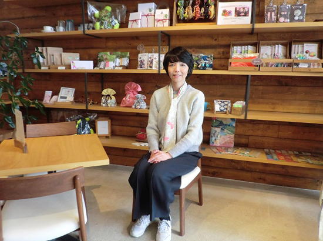
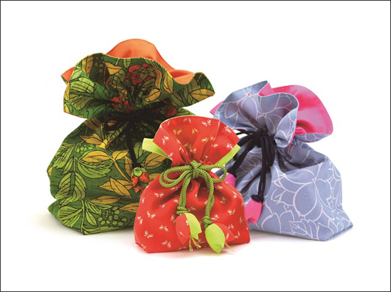

被災地のいま 宮城県・福島県の現状
3.11を忘れない・・
みやぎ生協から被災地・宮城のいまをお伝えします
第66回 2019年2月5日 ―復興を担う女性たち―
「亘理町の文化から生まれた手作り雑貨。ビジネスとして長く続けていきたい」
株式会社 WATALIS
亘理町は町面積の約半分が浸水し、8万人が避難しました。震災から数カ月後、引地恵さんは町内でコミュニティづくりのためのワークショップを始めました。
亘理町には着物の残り布でつくった巾着袋にお米などを入れて感謝を伝える返礼の文化があります。引地さんは、その巾着袋を地元の女性たちの手で再現し、着物リメイク雑貨として販売していこうと考えました。ワークショップに集まった地元の女性たちとともに和裁の先生の指導を受けながら、手作りの巾着袋を「商品」として送り出せるよう、腕を磨きました。
2015年、引地さんは大きな決断をします。着物リメイク雑貨の製造販売をコミュニティ活動から切り離し、新たにつくった（株）WATALISへ移したのです。販売したお金で材料を仕入れ、作り手に製作費を支払い、経費をまかなう―。そんな当たり前の「ビジネス」として事業を続けるためでした。
「コミュニティ活動と並行して取り組んでいたので、着物リメイク雑貨の製造販売も、震災後の一時的な仕事づくりと見られていました。商談に赴くと、“きちんと供給できるのか”“納期は守れるのか”と信用を得る難しさに直面しました。“震災から時間が経っているので、もう扱わない”と言われたこともありました」。
“素人に会社経営は無理だ”と危ぶむ声もありましたが、引地さんはビジネスコンペに応募して受賞したり、ウェブ上に販売サイトを開設したりするなど積極的に道を拓きました。作り手さんに縫製を仕事として続けるかどうかを確認し、一層クォリティの向上に努めました。
（株）WATALISの事業は地元の友人知人や震災後につながった人々の応援を受け、着実に歩みを進めてきました。従業員は現在、作り手を含めて12人。アクセサリーや小物雑貨など商品の種類も増えました。WATALISは亘理町のワタリとお守りの意味のTALISMAN（タリスマン）を組み合わせた造語です。「商品を手に取っていただくことで亘理町に関心を持っていただければ嬉しいですね」。
故郷で生まれ故郷を伝える地場産品は、地域経済の担い手になります。「長く続けることで地元に少しでもお金が入り、活気が生まれる。そういう道を目指していきたい」と引地さんは願っています。
※株式会社WATALIS http://watalis.co.jp/

▲引地恵（ひきちめぐみ）さん。2016年、
「ちょっとお洒落して集える場がほしい」との要望に応え中町カフェーをオープンしました。様々な商品を手に取って見ることもできます。

▲巾着袋は地元の女性たちが少し訛って
「ふぐろ」と呼んでいたことから「FUGURO」と名付けられました。
（写真提供：（株）WATALIS）
前の記事
第65回「―復興を担う女性たち―「小さな人々にスポットを当てたい」タガの柵（き）」（2019年1月5日）